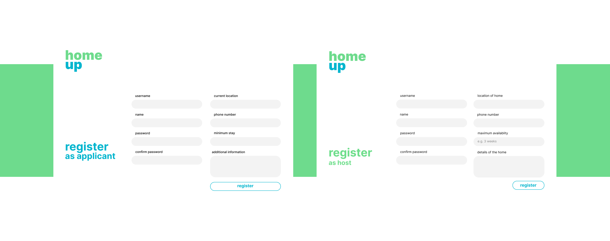

UI Designer & Front-End Developer
Ly Nguyen, Christian Lee, James Nguyen
HomeUp was a web application built as part of SDHacks 2021 with the goal of contributing towards the alleviation of homelessness in urban centers.
Homelessness should not be viewed as a dispositional factor which only befalls those that are just unwilling to work. The risk of homelessness can befall almost anyone, even the most hardworking. Considering this, there should be an easier way for one to find temporary housing, and give oneself the chance to rebuild one’s life.
Position yourself in the shoes of someone going through the lowest point in life. You just got laid off by a job you hated and you are months behind from rent, while having a family that you need to take care of. You are forced to leave this house but have nowhere to go, and you begin to question whether you would just need to accept the reality of being homeless.
As much as we try to empathize with people in these situations, we often question ourselves whether there is anything we can do to aid those in this position. It is in this situation where HomeUp can be a potential solution to aid the process of providing temporary housing. How can a host reliably find someone that is in need of housing, while at the same time giving these homeless people a reliable host that would fulfill their needs? Through its application-based system, hosts can reach out to multiple candidates to find one that would fit their available housing, and ensure that they accommodate those that are most in need.
With HomeUp, homeowners are empowered to provide a temporary housing solution to those who need it. Despite the seemingly short-term impact, the chance to gain short-term housing could end up overturning one’s whole life.
As a hackathon project, there was a need to display our technical expertise while making sure that it would be reasonable to build within a span of 48 hours.
Considering our prior experience with these technologies, we decided to go with the following tech stack:
The hackathon posed the exciting opportunity of having the flexibility to design for my ease as a developer. Being the sole designer and frontend developer, I had the freedom to ensure that the designs were easy for me to implement in the given time span.
The sidebar of the web application reused a similar design for both the host and applicant views. This allowed for a consistent visual style while streamlining the development process
Similarly, the end card of the application (when the host has chosen a potential application, or the applicant has chosen a host) took advantage of component reusability.
A simple singular interface displaying all potential applications/hosts allowed for easy navigability and fairness for all applications.
A no-barriers approach to the application provides easy access to the application, and encourages more people to use the application.
THE GOOD STUFF
THE "COULD HAVE BEEN BETTER" BAD STUFF